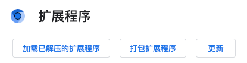
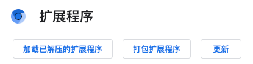

安装方法
访问地址：chrome://extensions/
需要开启开发者模式，右上角开关打开。
左上角【加载已解压的扩展程序】

选择解压后的源码文件夹，并确定
安装完成！
使用方法
点击浏览器右上角的 Twitter Analyze 然后会打开首页，在这里可以看到关注和粉丝的涨幅。
在关注列表中第一次使用的时候需要先点击【获取列表】获取账号的关注用户。当下一次点击【获取列表】的时候，会与上一次的记录检查变更。
访问地址：chrome://extensions/
需要开启开发者模式，右上角开关打开。
左上角【加载已解压的扩展程序】

选择解压后的源码文件夹，并确定
安装完成！
点击浏览器右上角的 Twitter Analyze 然后会打开首页，在这里可以看到关注和粉丝的涨幅。
在关注列表中第一次使用的时候需要先点击【获取列表】获取账号的关注用户。当下一次点击【获取列表】的时候，会与上一次的记录检查变更。